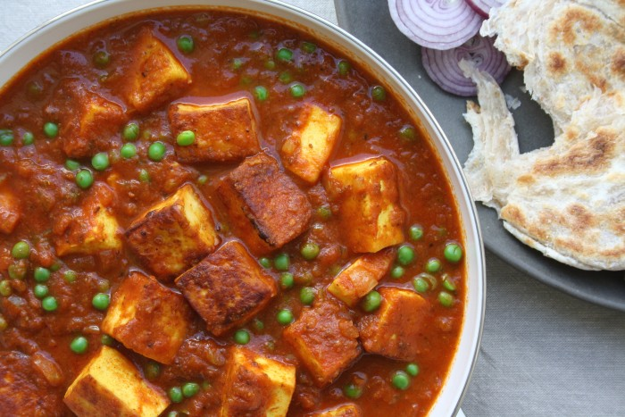

Main Course
matar paneer

Mattar paneer, also known as matar paneer,
and mutter paneer is a vegetarian North Indian dish
consisting of peas
and paneer in a tomato based sauce,
spiced with garam masala.
It is often served with rice and an Indian type of bread.
NEXT
for contact: